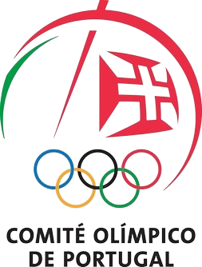

A Federação dos Arqueiros e Besteiros de Portugal (FABP) tem por objetivo o desenvolvimento do tiro com arco e do tiro com besta, inclusive como armas de caça, e tem desenvolvido intensa atividade desportiva nacional e internacional.
Fundada em 1981, por escritura notarial de 11 de Setembro, com a designação de "Federação dos Arqueiros de Portugal (FAP)", esta foi alterada, por força das disposições da lei de bases do desporto, para a atual denominação por escritura pública de 26 de Maio de 1995.
A participação internacional tem sido bastante valorizada e os resultados obtidos, com 83 medalhas de ouro, 32 de prata e 36 de bronze obtidas em campeonatos da Europa e do Mundo, desde 1994, além de outras classificações de grande mérito e de recordes do Mundo e da Europa, traduzem-se num contributo muito importante para a projeção de Portugal na modalidade desportiva do tiro com arco e com besta, uma atividade de ar livre para toda a família.
Confederação do Desporto de Portugal (CDP)

Comité Olimpico de Portugal (COP) - desde 1984

International Field Archery Association (IFAA) - desde 1986

International BowHunter Education Program (IBEP) - desde 1985

Internationale Armbrustschuten Union (IAU) - desde 1982

World Crossbow Shooting Association (WCSA) - desde 2003

HDH International Archery Association (HDH-IAA) - desde 2015 - desde 2003